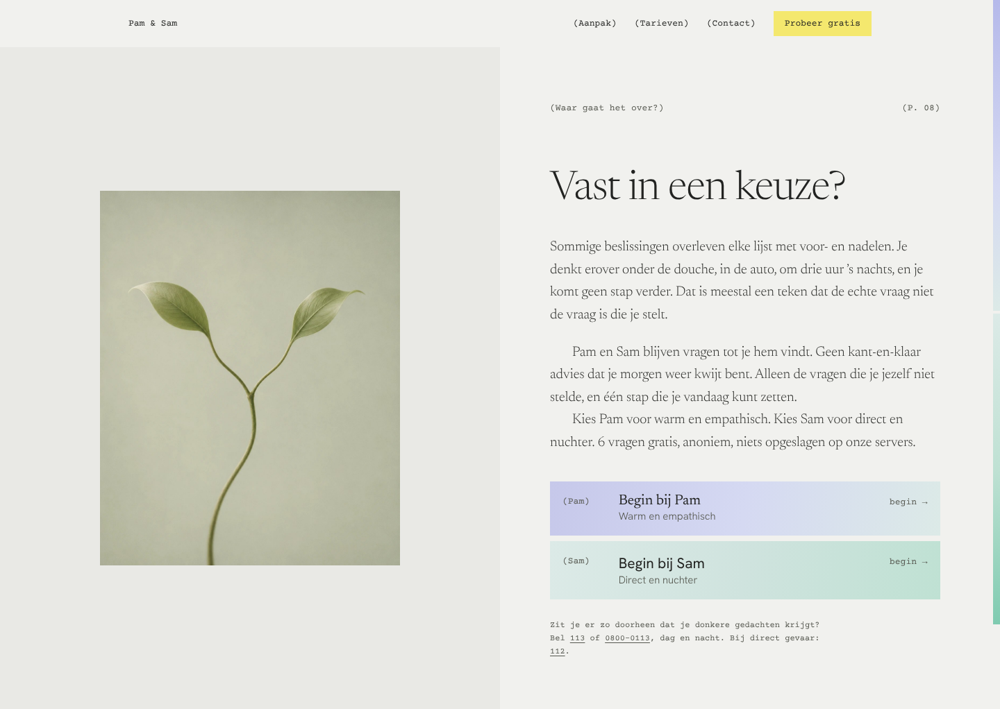
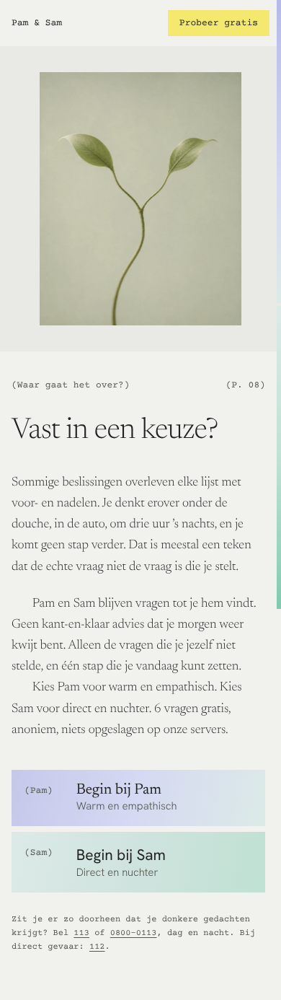
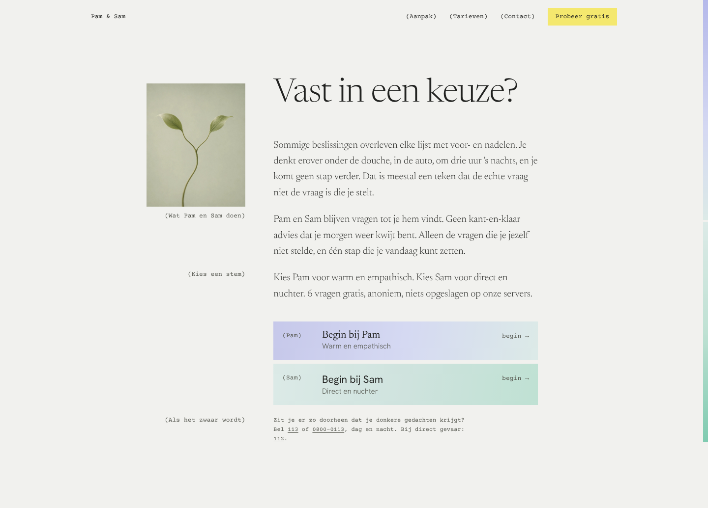
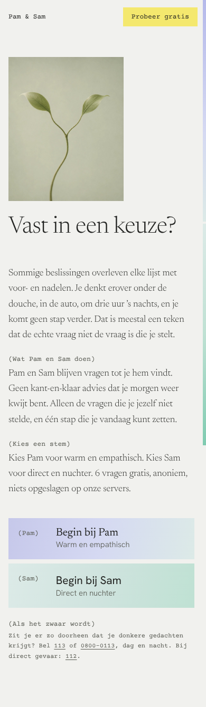
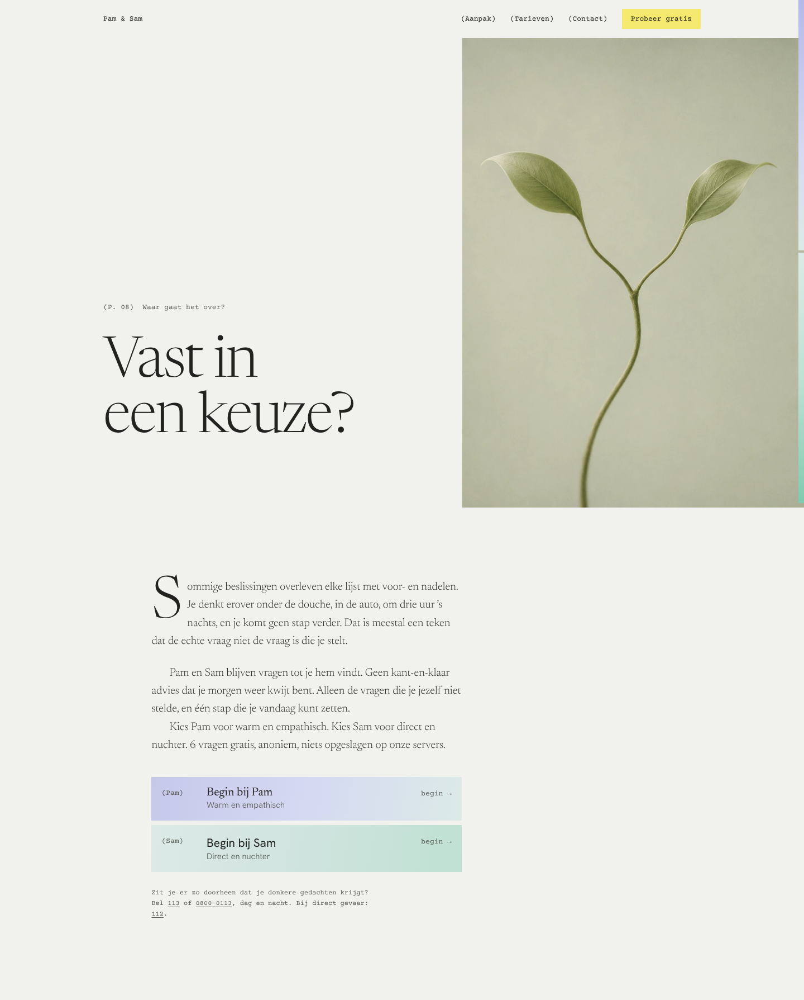
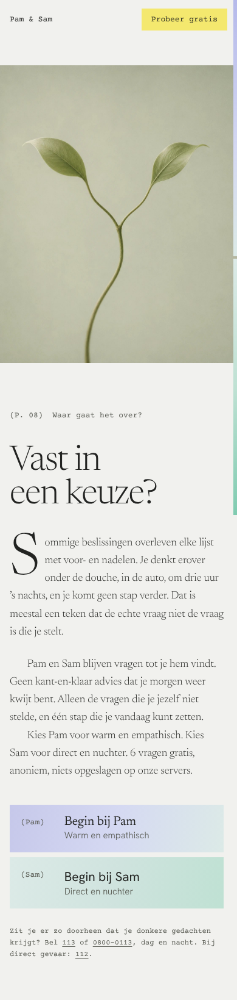

Drie manieren om een onderwerppagina op te maken zoals een boek, niet gecentreerd. Steeds dezelfde tekst en dezelfde foto.


Links de foto als plaat op een eigen pagina, rechts de tekst als boekpagina: een kopregel in typemachineletter met paginanummer, de eerste alinea iets groter, daarna alinea's met een inspringing in plaats van witregels.


Eén tekstkolom met een kantlijn ernaast, zoals in een studieboek. In de kantlijn staan de foto en korte notities in typemachineletter die zeggen waar elke alinea over gaat.


Een hoofdstukopening: de titel groot links, de foto loopt rechts tot de rand. Daaronder de tekst in één kolom met een initiaal, de grote eerste letter van een hoofdstuk.